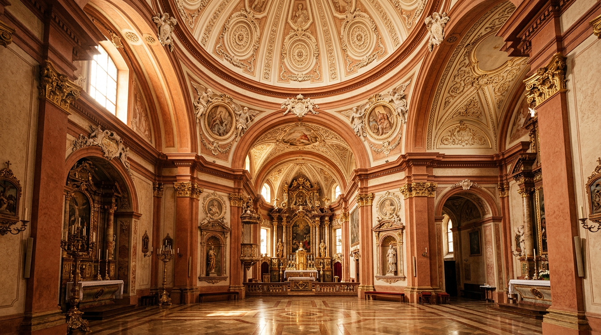

Bernini's church — San Tommaso da Villanova.

Outside the great Roman commissions, Gian Lorenzo Bernini designed very few parish churches. One of them, perhaps the most intimate, stands at the centre of Piazza della Libertà in Castel Gandolfo. It was commissioned by Pope Alexander VII Chigi, begun in 1658 and consecrated in 1661.
A papal commission
The pre-existing parish church was San Nicola. When Pope Alexander VII, elected in 1655, decided to renovate the Apostolic Palace of Castel Gandolfo, he entrusted Bernini with rebuilding the church as well: it was to serve as the palatine chapel of the pontifical complex ([Baroque Art Museum WNF](https://baroqueart.museumwnf.org/database_item.php?id=monument;BAR;it;Mon13;25;en), [Italia.it](https://www.italia.it/en/lazio/castel-gandolfo/chiesa-di-san-tommaso-da-villanova)).
On 1 November 1658, only weeks after the site had opened, the pope canonised the Spaniard Tommaso da Villanova (1486-1555), Archbishop of Valencia, famous for his active charity. Alexander VII decided to dedicate the new church to the newly elevated saint: a precise theological choice, affirming the Catholic doctrine of salvation through faith and works, in open contrast with the Lutheran view ([Baroque Art Museum WNF](https://baroqueart.museumwnf.org/database_item.php?id=monument;BAR;it;Mon13;25;en)). The original dedication to San Nicola was moved to the lower church facing the lake.
Greek cross and ribbed dome
Bernini adopted a Greek cross plan, a Renaissance model whose illustrious precedent was Santa Maria delle Carceri in Prato, a work by Giuliano da Sangallo of 1485. He reinterpreted it in a Baroque key, verticalising the entire building: paired pilasters at the crossing of the arms, upward thrust, structural dynamism ([Italia.it](https://www.italia.it/en/lazio/castel-gandolfo/chiesa-di-san-tommaso-da-villanova)).
The façade, deliberately sober, is arranged on two levels with Tuscan pilasters: portal on the lower tier, a large window on the upper tier, pediment bearing the coat of arms of the Chigi family. Behind, a small bell tower. Above all rises the ribbed dome clad in lead sheeting, fifty metres tall: an addition completed in October 1660, when the church had already been roofed over, in the wake of local protests over the demolition of the old church of San Michele ([Rotary Castelli Romani — History](https://www.rotarycastelliromani.it/castel-gandolfo-la-storia/)).
The stuccowork by Antonio Raggi
The white and gold interior stucco decoration is the work of Antonio Raggi (1624-1685), Bernini's favourite Lombard pupil. The dome carries eight medallions with miraculous episodes from the life of Saint Thomas, held by pairs of angels resting on the window frames; in the pendentives, the Four Evangelists ([Baroque Art Museum WNF](https://baroqueart.museumwnf.org/database_item.php?id=monument;BAR;it;Mon13;25;en), [Italia.it](https://www.italia.it/en/lazio/castel-gandolfo/chiesa-di-san-tommaso-da-villanova)).
The 1661 inauguration took place precisely after the completion of the stuccowork ([Visit Castelli Romani](https://www.visitcastelliromani.it/en/travelguide/the-church-of-saint-thomas-from-villanova/)). The ensemble of architecture, stucco sculpture and altar paintings was conceived by Bernini as a unified project, in which the arts blend in harmony. The same artist-director approach the master applied in Rome.
“A fascinating and harmonious whole, attributable to a unitary project by an artist-director such as Bernini, in which the different arts blend naturally.”Baroque Art Museum WNF — San Tommaso da Villanova entry
The altar paintings
On the high altar, within a stucco medallion held by angels and crowned by the Almighty, stands the Crucifixion (1661) by Pietro da Cortona: Christ on the cross with the Virgin, Mary Magdalene and Saint John. The dramatic tension is softened by the playful motif of a putto leaning out from the edge of the frame. On the right-hand altar, the Glory of Saint Thomas by Giacinto Gimignani (1661-1662): the coin vase at the centre of the composition alludes to the saint's active charity. On the left-hand altar, the Assumption of the Virgin by Guglielmo Cortese, known as il Borgognone, also from 1661: classical sobriety meets Baroque sensibility ([Baroque Art Museum WNF](https://baroqueart.museumwnf.org/database_item.php?id=monument;BAR;it;Mon13;25;en)).
How to visit
The Pontifical Collegiate Church of Saint Thomas of Villanova stands at 12, Piazza della Libertà ([Comune di Castel Gandolfo](https://www.comune.castelgandolfo.rm.it/it/vivere/748732)). Admission is free and the building is barrier-free. It is an extraterritorial possession of the Holy See and remains an active parish: visitors should respect the times of religious services. On the same square are the fountain designed by Bernini himself in 1661, inspired by the ground plan of Saint Peter's Basilica, and the façade of the Apostolic Palace. Three pontifical works within two hundred square metres of piazza: a rare Baroque concentrate outside the walls of Rome.